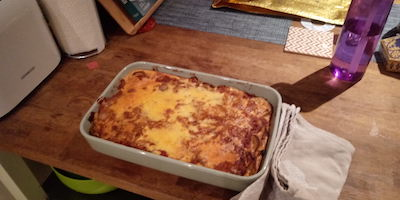

Eggplant Moussaka

Description
The meatless take on the classic Greek dish, the eggplant in this dish will have the eater coming back for seconds.
Recipe lifted from 'Everyday Vegetarian' cookbook by Cooking Light
Ingrdients
For the sauce
- 3 peeled eggplants, cut into slices
- 2 tablespoons of extra virgin olive oil
- 2 cups of chopped onion
- At least 4 cloves of garlic, no judgement
- 1/2 cup of bulgur
- bit of ground allspice
- bit of ground cinnamon
- bit of ground cloves
- 2 cups of vegetable stock
- bit of oregano
- 1 can of diced tomatoes
For the cheese sauce
- 1 tablespoon of butter
- 2 tablespoons of all-purpose flour
- 1 cup of milk
- Grated parmesan cheese, go to town
Directions
- Preheat oven, or grill (roughly 190-200°C).
- Brush eggplant slices with oil and place them on a baking tray, grilling for about 10 minutes.
- Repeat procedure for remaining eggplants and leave aside.
- Heat a pot and add oil. Add onions and sauté for 8 minutes. Add garlic, and sauté for another minute. Add bulgur and cook for 3 minutes, or until bulgur is lightly toasted, stirring frequently. Add ground allspice, cinnamon and cloves, cooking for another minute. Stir in broth, oregano and diced tomatoes. Bring to boil, reduce heat and simmer for 20 minutes, until thinkened, stirring occasionally.
- Melt the butter in a saucepan over medium heat. Add the flour, cook for 1 minute, stirring constantly with a whisk, until well blended. Gradually add milk, stirring constantly. Bring to boil; reduce heat to medium low, and simmer for 5 minutes, until thickened, stirring frequently. Stir in cheese and salt. Remove from heat.
- Preheat oven to 180°C.
- Generously coat baking dish with cooking spray, and arrange eggplants along the bottom. Spread bulgur mixture evenly over the eggplant.
- Repeat with another layer of eggplant and bulgur.
- Top with cheese sauce.
- Bake for 40 minutes.
- Let stand for 10 minutes.
Main page